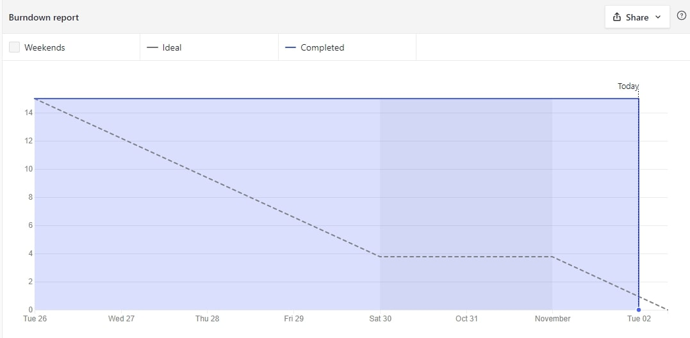

Burn Down Chart:
Completed Stories:
We had our primary meeting over zoom to introduce ourselves and divide initial tasks. As a group we accepted the git project and cloned the repo, then setup zenhub. We then tasked Vincent with creating the sprint issues and backlog in Zenhub, Jeremey and Bernardo with setting up the shell sprint report HTML file and Heroku web server, and Philippe with putting together the report.
Narrative of Accomplishments and Challenges:
Current Backlog:
Narrative of Expected Work Before Next Report:
For our next sprint we will prioritize the first three times listed above on the current backlog as these are key to mininum functioning app and will allow us to time to troubleshoot issues.